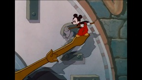

ANIMATION
R-rated
X-rated
Filter
|
↑
♬
Melody Time (1948) | Once Upon A Wintertime
Mickey Mouse (1941) | The Little Whirlwind
Fantasia (1940) | Night On Bald Mountain
The Cat in the Hat (1971)
Mulan (1998) | Mushu's Wake Up Call
Atlantis The Lost Empire (2001) | The Crew gets Destroyed by the Leviathan
Anastasia (1997) | Once Upon A December Song Scene
The Many Adventures Of Winnie The Pooh (1977) | Winnie the Pooh meets Rabbit
Pooh's Grand Adventure: The Search For Christopher Robin (1997) | Piglet - Sku - ske - ski - sko - SKULL!
The Destruction of Troy and the Adventures of Odysseus (2000)
Aladdin (1992) | Lamp scene
Aladdin: The Return of Jafar (1994) | Arabian Nights
The Little Mermaid (1989) | Ariel saves Eric
The Little Mermaid II: Return to the Sea (2000) | Ariel's Transformation
Silly Simphony: Hell's Bells (1929)
Mickey Mouse: The Haunted House (1929)
The Lion King (1994) | Simba's Alive
The Lion King II: Simba's Pride (1998) | Kiara meets Kovu
Treasure Planet (2002) | Brace Yourself, Doctor!
The Black Cauldron (1985) | To The Castle
Tom And Jerry: Mice Follies (1954)
Lady And The Tramp (1955) | The Rat Returns
Lady and the Tramp II: (2001) Scamp's Adventure | Independence Day Parade
Cinderella (1950) | Cinderella Gets Locked Up by The Stepmother
Bambi (1942) | The Prince of the Forest
Ichabod and Mr. Toad (1949) | The Headless Horseman
Wind in the Willows (1949) | Mr. Toad sees a car for the first time
Robin Hood (1973) | Stealing The Gold
Mickey's Trailer (1938)

Mickey Mouse: Clock Cleaners (1937)
Melody Time: The Legend of Johnny Appleseed (1948) | Johnny Appleseed's Song
Melody Time: Pecos Bill (1948) | Bill finds a horse
Melody Time: Blame it on the Samba (1948) | Cafe do Samba
Melody Time: Bumble Boogie (1948)
Little Toot (1948)
Willie the Operatic Whale (1946)
Lilo & Stitch (2002) | Trial
Lilo & Stitch 2: Stitch Has a Glitch (2005) | Lilo vs Mertle
Pete's Dragon (1977) | Hoagy in Elliott's cave
Looney Tunes: Back in Action (2003) | Taz's Bride Scene
Who Framed Roger Rabbit (1988) | Drink the Drink
Atlantis: Milo's Return (2003) | Ending
Quest for Camelot (1998) | Chased by Dragons
The Sword In The Stone (1963) | Higitus Figitus
The Princess and the Frog (2009) | Kiss the Frog
Sleeping Beauty (1959) | Maleficent Makes Aurora Touch The Spinning Wheel
Hercules (1997) | Rise Of The Titans
How the Grinch Stole Christmas! (1966) | The Grinch hated Christmas
Frosty the Snowman (1969)
Mickey's Christmas Carol (1983) | Goofy Marley Fandub
The Great Mouse Detective (1986) | Ratigan
The Aristocats (1970) | Everybody wants to be a cat
The Rescuers (1977) | Bianca and Bernard
The Rescuers Down Under (1990) | Cody meets McLeach and Joanna
Tarzan (1999) | Leopard Fight Scene
Dumbo (1941) | Pink Elephants on Parade
The Jungle Book (1967) | Kaa, Hold it Kaa!
Pocahontas (1995) | Pocahontas and Nakoma Jumping Scene
Beauty and the Beast (1991) | Belle Takes Her Fathers Place
Play